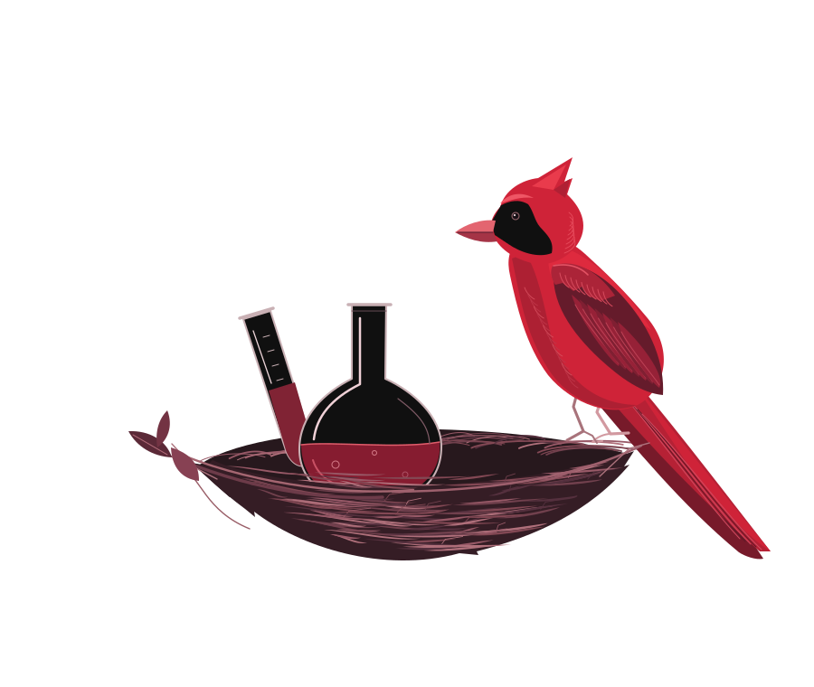

A home for
curious minds.
Science starts with a question. Discover the ideas, research, and perspectives taking flight at Wesleyan.
Explore the journal
From the journal
Browse the archive ↗Good science belongs
in good company.
Bring your curiosity.
Research, writing, illustration. There is more than one way to tell a science story.
Explore contributing